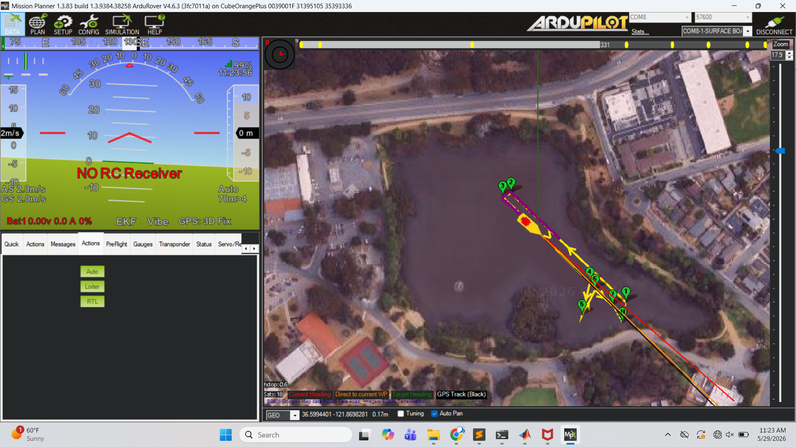
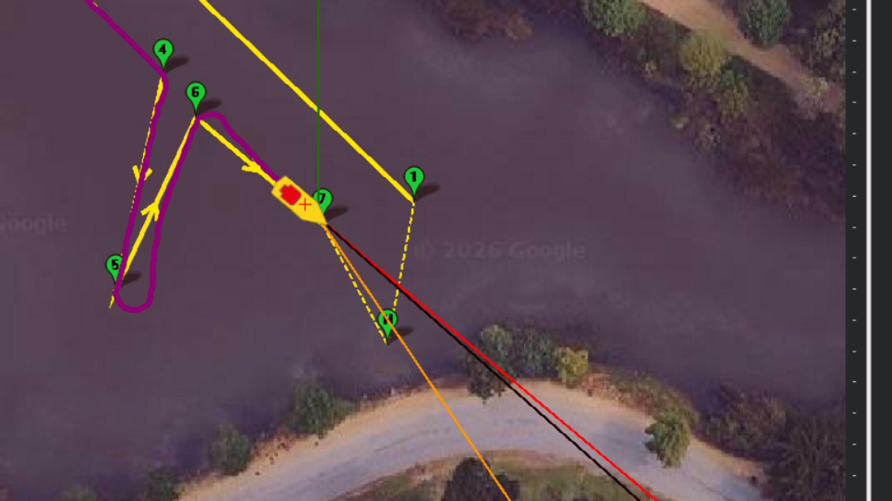
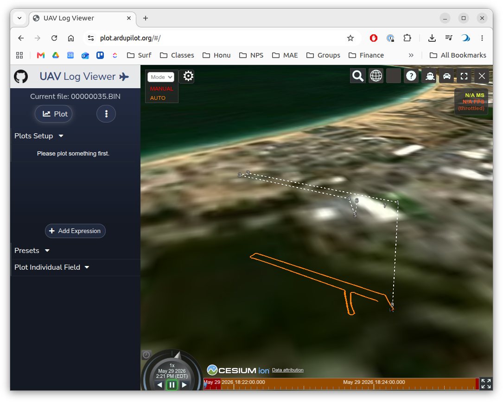
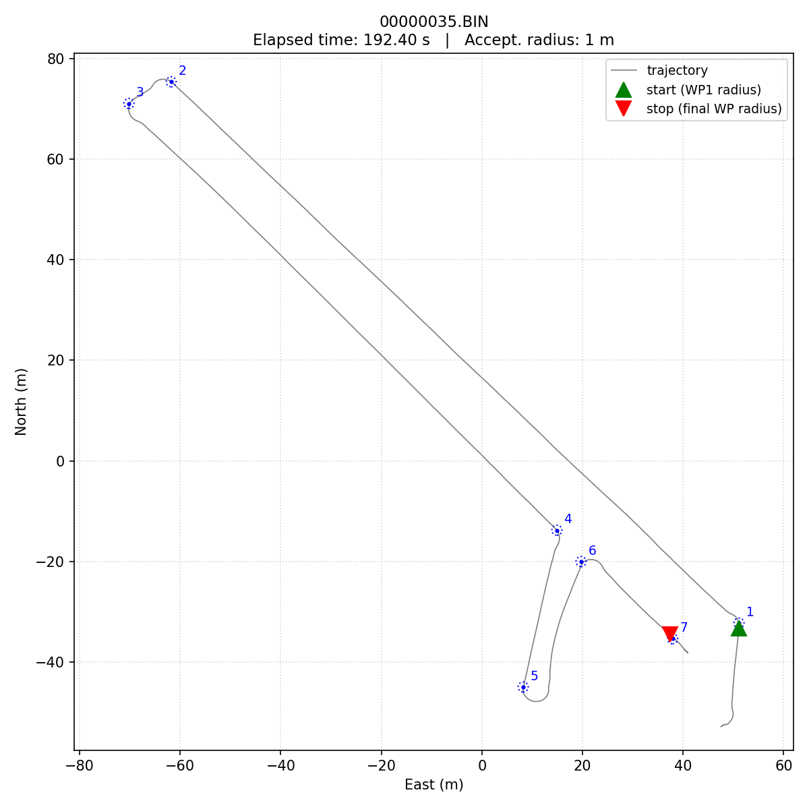

Procedure
Lessons learned
- Mode Awareness: It’s easy to forget which mode you’re in, especially when you’re switching back. You must be in AUTO mode for the autopilot to execute the uploaded waypoint mission; MANUAL is direct pilot control and ACRO is what you used in Lab 2 for the closed-loop step tests.
- Write Params: When changing the autopilot parameters, make sure to click “Write Params” in Mission Planner to save them to the autopilot. If you forget this step, the parameters will not be updated on the autopilot and you won’t see the expected changes in behavior.
- Compass Calibration: Insufficient compass calibration can prevent ARM’ing the USV. This can also lead to other, more subtle issues. The instructors have not been able to reproduce this behavior. Make sure the vessel is flat and level when powering up the autopilot and when doing the large vehicle calibration. Worst case, try doing a “full” calibration through Mission Planner. Make sure to secure the USV internals so that you can rotate it in all orientations without damaging anything.
- QA/QC Data in the Field: Before putting the USV away, do some quick visualization of a selection of the log files to take a high-level peek at contents of the logs. Use the online tool at https://plot.ardupilot.org/ to peek at the raw BIN files from the SD card. This can help you confirm that the logs are capturing the signals you expect, and that the signals look reasonable (e.g. not all zeros, not saturated at max value, etc.).
Configuration Parameter Changes
There are a few parameter changes we discovered in prototyping the lab:
AUTO_KICKSTART = 0: By setting this to zero, as soon as the pilot switches to AUTO, the USV will immediately execute the mission.WP_RADIUS = 1: Sets the acceptance radius for each waypoint to 1 meter. For the competition to be fair, all teams should use the same acceptance radius.FS_ACTION = 0: Disables the failsafe behavior of the autopilot. If the autopilot detects a failure condition (e.g. loss of R/C signal, loss of GPS, low battery) the mission continues uninterrupted. The USV will likely lose connection to the R/C transmitter at the far side of the lake; if this value is non-zero, that failsafe will halt the mission.
The full parameter file from the instructors’ baseline is here: docs/2026_05_29_proto.param. We would recommend searching through this if you have questions, but using this full file will overwrite your stabilization-layer tuning from Lab 2, so we recommend just changing the parameters above for the baseline runs and then using this file as a reference for any other parameter changes you want to make.

FS_ACTION is set to 0, the mission will continue even if the R/C signal is lost. Also note that here the Planner can request return-to-launch (RTL).1. Pre-lab
- Confirm all hardware: boat, batteries (vehicle + autopilot + R/C + ground laptop), 900 MHz radio, R/C transmitter.
- Mission file loaded on the ground laptop. Lab-2 baseline
.paramon hand. - Roles assigned (Planner / Scribe / Pilot).
- Scribe template ready (UTC time + intent per arm).
2. Shore setup
- Standard ArduRover bring-up (see Lab 2 Procedure §2 for the detailed checklist — same vehicle, same telemetry, same baseline confirmation).
- Upload the mission file to the autopilot via Mission Planner.
- Confirm waypoints render correctly on the Mission Planner map.
3. Running the course
Vehicle Safety Notes:
- Pilot can abort a mission when in R/C range by switching to MANUAL or ACRO mode.
- Planner can command the USV to return to launch (RTL) at any time, which will cause the USV to return home. This is particularly useful if the USV goes out of R/C range!
Typical Process:
- Pilot ARMs, starts new log file.
- Scribe notes the UTC arm time to correlate with the log file later.
- Pilot is in MANUAL (or AUTO) and drives to a safe starting point.
- Run mission:
- Pilot switches to AUTO to start the mission.
- Planner confirms AUTO on Mission Planner.
- Scribe starts the stopwatch the first time the USV is within the acceptance radius of the first waypoint.
- Pilot and Planner monitor the mission execution, ready to abort (switch out of AUTO mode).
- (Optional) Planner takes a screen grab of the Mission Planner display during the run to capture the course time and the trajectory for later comparison to the log-derived results. Please include these with the BIN files you upload to the shared repository.
- Scribe stops the stopwatch the first time the USV is within the acceptance radius of the final waypoint.
- Pilot switches to MANUAL after the mission completes.
- Pilot Dis-ARM to close the log - and re-ARM.
- Scribe notes the UTC time as the end of the log file.
- Planner saves the current parameter file locally.
Tuning Process Notes
The parameters above are the only ones (that we know of) that need to be changed for the baseline run, i.e., the navigation should work acceptably well out of the box. We’d like to tune the system to minimize the time to complete the course. For tuning, you can change any parameters you like, but we recommend keeping a careful record of what you changed and why, and using the full parameter file from the instructors as a reference if you want to make more extensive changes.
We are really interested to find out how you tune this to maximize course speed - so any notes you have on your tuning process and the effects of different parameter changes are very welcome in the deliverable slide!
The ArduRover documentation on tuning the navigation layer is here: https://ardupilot.org/rover/docs/rover-tuning-navigation.html. It is complicated.
You can also zoom in with MP to get diagnostics on the performance.

4. Log recovery
Remove the SD card from the autopilot and copy the .BIN log file to the shared repository, in your team’s subfolder.
- ME2801_USV_Shared — upload raw
*.BINmission logs to your team subfolder.
5. At the field — data quality check
It is highly recommended to do a quick check of the log files in the field. The https://plot.ardupilot.org/ tool is great for a quick peek at the raw BIN files from the SD card.

6. Post-field
This will likely need to be done by the instructors. Setting up the Python (virtual) environment is beyond the scope of the class (but you are welcome to see if you favorate AI tool can assist).
Run the analysis script
utils/ardu_utils/bin_coursetime.pyto generate the trajectory plot and the log-derived course time. Pass it your.BINlog(s) and the mission.waypointsfile; add-pfor the trajectory plot. The course time is measured from the first time the USV is within the acceptance radius of the first waypoint to the first time it is within the acceptance radius of the final waypoint — matching the scribe’s stopwatch convention above. By default it reads the acceptance radius from each log’sWP_RADIUSparameter.cd utils/ardu_utils source .venv/bin/activate # see ardu_utils/README.md for one-time setup python bin_coursetime.py /path/to/logs/ /path/to/challengecourse_ay26q3.waypoints -p

7. Deliverable
See the Lab 3 overview for the deliverable details.